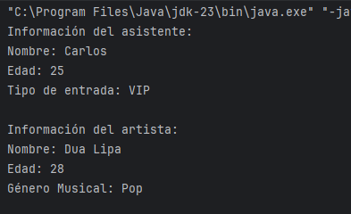

La herencia en Java es un mecanismo que permite que una clase (subclase o clase hija) adquiera los atributos y métodos de otra clase (superclase o clase padre).
Esto nos ayuda a reutilizar código, evitar duplicaciones y crear una jerarquía de clases más organizada.
Uso de extends y super en la Herencia
En Java, la herencia se implementa usando la palabra clave extends, y para acceder a los métodos o atributos de la superclase usamos super. Si hacemos analogía con lo que ya conocemos de la POO, super equivaldría a this, pero apuntando a los elementos de nuestra clase "madre" en lugar de a los propios de la clase en la que nos encontremos.
Un ejemplo...
Imaginemos que estamos programando un sistema para un Festival. En un concierto hay diferentes tipos de personas, como asistentes y artistas. Todos tienen atributos en común, pero también características únicas que los diferencia.
1️⃣ Superclase. Definimos la clase "madre", o mejor dicho, los elementos que se tendrán en común. En este caso, todas las personas en el festival tienen un nombre y una edad:
//superclase
class Persona {
String nombre;
int edad;
public Persona(String nombre, int edad) {
this.nombre = nombre;
this.edad = edad;
}
public void mostrarInfo() {
System.out.println("Nombre: " + nombre);
System.out.println("Edad: " + edad);
}
}
2️⃣ extends. Creamos una subclase a partir de una superclase, lo que permite que una clase herede atributos y métodos de otra:
//subclase que hereda de Persona
class Asistente extends Persona {
private String entrada; //tipo de entrada (General, VIP, etc.)
}- Asistente hereda de Persona nombre y edad, pero añade un nuevo atributo: tipo de entrada.
3️⃣ Usar super() en el constructor y métodos:
//subclase que hereda de Persona
class Asistente extends Persona {
private String entrada; //tipo de entrada (General, VIP, etc.)
public Asistente(String nombre, int edad, String entrada) {
super(nombre, edad); //llamamos al constructor de la clase Persona
this.entrada = entrada;
}
@Override
public void mostrarInfo() {
super.mostrarInfo(); //llamamos al método de la clase Persona
System.out.println("Tipo de entrada: " + entrada);
}
}- Se usa super(nombre, edad) para llamar al constructor de Persona para evitar repetir código, además de asegurarnos de que su nombre y edad se inicializan correctamente.
- super.mostrarInfo() reutiliza el método de Persona antes de agregar más información dentro de su propio método mostrarInfo(). Si Persona cambia su mostrarInfo(), todas las subclases se actualizan automáticamente.
Además de Asistentes, podría haber Artistas :
//subclase que también hereda de Persona
class Artista extends Persona {
String generoMusical;
public Artista(String nombre, int edad, String generoMusical) {
super(nombre, edad);
this.generoMusical = generoMusical;
}
@Override
public void mostrarInfo() {
super.mostrarInfo();
System.out.println("Género Musical: " + generoMusical);
}
}Vamos a escribir un main para probar nuestras clases:
public class Concierto {
public static void main(String[] args) {
Asistente a1 = new Asistente("Carlos", 25, "VIP");
Artista art1 = new Artista("Dua Lipa", 28, "Pop");
System.out.println("Información del asistente:");
a1.mostrarInfo();
System.out.println();
System.out.println("Información del artista:");
art1.mostrarInfo();
}
}